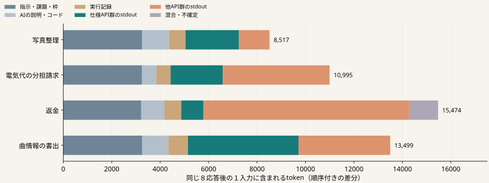

AIへ渡す情報・取得・実行・検証を、ハーネスで制御する。
P33では一律に出力を省くと、
初回入力は短くても総tokenは増えた。
仕様説明と作業データの費用は
どこに、どれだけ含まれるか。
| 項目 | 固定した内容 |
|---|---|
| 対象 | 写真整理／電気代の分担請求／返金／曲情報の書出 |
| 状態 | 過去のP29から同じ８応答境界。32応答を保持。 |
| 測定 | 入力の各部分を順に戻し、４課題×11入力を計数。 |
| 照合 | 最後の全入力がP42の保存入力とtoken数に一致。 |
追加の生成・API実行・環境再生・最終評価はすべて０。

仕様API群は「呼んだAPIが仕様APIのみ」の分類。出力全文が仕様だけという意味ではない。
差分は復元順序に依存する。図の大きさを、そのまま安全に削除できる量とは解釈しない。
| 課題・出力 | 全体の文字数 | 仕様返却との一致 | 残り |
|---|---|---|---|
| 写真整理・s9 | 5,787 | 5,652 | 135 |
| 写真整理・s15 | 551 | 533 | 18 |
| 電気代の分担請求・s9 | 1,161 | 1,157 | 4 |
| 返金・s6 | 2,701 | 2,638 | 63 |
| 返金・s13 | 545 | 527 | 18 |
| 曲情報の書出・s4 | 11,256 | 11,248 | 8 |
| 曲情報の書出・s11 | 5,342 | 5,322 | 20 |
費用の内訳と、全体一致規則が
扱えなかった出力の対応。
44計数、保存入力88件の再構成、
不一致０。サーバーは計数後に正常停止。
作業情報を落とさず区別できるか。
既存の制御との差は何か。
最終品質と継続総費用はどう変わるか。